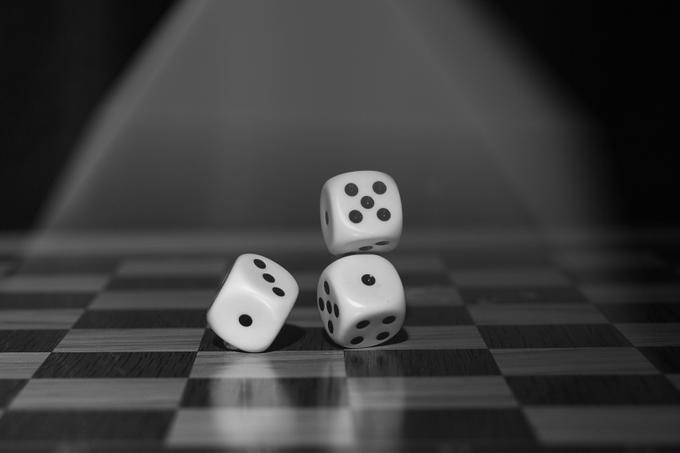

Теория игр — это раздел математической экономики, изучающий решение конфликтов между игроками и оптимальность их стратегий. Конфликт может относиться к разным областям человеческого интереса: чаще всего это экономика, социология, политология, реже биология, кибернетика и даже военное дело. Конфликтом является любая ситуация, в которой затронуты интересу двух и более участников, традиционно называемых игроками. Для каждого игрока существует определенный набор стратегий, которые он может применить. Пересекаясь, стратегии нескольких игроков создают определенную ситуацию, в которой каждый игрок получает определенный результат, называемый выигрышем, положительным или отрицательным. При выборе стратегии важно учитывать не только получение максимального профита для себя, но так же возможные шаги противника, и их влияние на ситуацию в целом.

Теорию игр придумали венгерский математик Джон фон Нейман и немецкий экономист Оскар Моргенштерн, которые в конце 1930-х годов переехали в США. Они встретились в Институте перспективных исследований Принстонского университета в 1940-х годах и написали книгу «Теория игр и экономическое поведение» (1944). Книга была переиздана в 1947 и в 1953 годах. До этого, в 1928 году, Джон фон Нейман написал статью, в которой вывел теорему о минимаксе, считающуюся фундаментальной в теории игр. В Принстоне он работал с Моргенштерном над тем, чтобы применить теорию игр к экономике, а также к салонным играм вроде покера. В своей книге фон Нейман и Моргенштерн смоделировали упрощенную версию покера и проанализировали оптимальные стратегии, которые выбирают игроки. Но спустя годы многие люди нашли их идеи полезными для экономики, биологии и в особенности для политологии. Более того, теория игр стала применяться в спорте и даже в таких дисциплинах, как философия. Теория игр предлагает структуру принятия решений и в условиях конфликта, и в условиях сотрудничества для игр, в которых два игрока или более. Другие ученые также внесли немалый вклад в развитие теории игр. Среди них — Джон Нэш, который знаменит благодаря равновесию Нэша, и несколько математиков и экономистов, которые в разное время получили Нобелевскую премию по экономике за свои труды.
Как мне кажется, смысл теории игр проще всего пояснить на «Дилемме заключенного», классическая формулировка которой звучит так:
Двое преступников, А и Б, попались примерно в одно и то же время на сходных преступлениях. Есть основания полагать, что они действовали по сговору, и полиция, изолировав их друг от друга, предлагает им одну и ту же сделку: если один свидетельствует против другого, а тот хранит молчание, то первый освобождается за помощь следствию, а второй получает максимальный срок лишения свободы (10 лет). Если оба молчат, их деяние проходит по более лёгкой статье, и они приговариваются к 6 месяцам. Если оба свидетельствуют против друг друга, они получают минимальный срок (по 2 года). Каждый заключённый выбирает, молчать или свидетельствовать против другого. Однако ни один из них не знает точно, что сделает другой. Что произойдёт?
| Преступник Б Стратегия «молчать» |
Преступник Б Стратегия «предать» |
|
| Преступник А Стратегия «молчать» |
Пол года каждому | 10 Лет преступнику А Отпустить преступника Б |
| Преступник А Стратегия «предать» |
10 Лет преступнику Б Отпустить преступника А |
2 года каждому |
А теперь представим развитие ситуации, поставив себя на место заключенного А. Если мой подельник молчит, лучше его сдать и выйти на свободу. Если он говорит, то так же лучше все рассказать, и получить всего два года, вместо десяти. Таким образом, если каждый игрок выбирает, что лучше для него, оба сдадут друг друга, и получат два года, что не является идеальной ситуацией для обоих. Если бы каждый думал об общем благе, они бы получили всего по пол года.
Кооперативной игрой является конфликт, в котором игроки могут общаться между собой и объединяться в группы для достижения наилучшего результата. Примером кооперативной игры можно считать карточную игру Бридж, где очки каждого игрока считаются индивидуально, но выигрывает пара, набравшая наибольшую сумму. Из двух типов игр, некооперативные описывают ситуации в мельчайших деталях и выдают более точные результаты. Кооперативные рассматривают процесс игры в целом. Не смотря на то, что эти два вида противоположны друг другу, вполне возможно объединение стратегий, которое может принести больше пользы, чем следование какой-либо одной.
Игрой с нулевой суммой называют игру, в которой выигрыш одного игрока равняется проигрышу другого. Например банальный спор: если вы выиграли сумму N, то кто-то эту же сумму N проиграл. В игре же с ненулевой суммой может изменяться общая цена игры, таким образом принося выгоду одному игроку, не отнимаю ее цену у другого. В качестве примера здесь отлично подойдут шахматы: превращая пешку в ферзя игрок А увеличивает общую сумму своих фигур, при этом не отнимая ничего у игрока Б. В играх с ненулевой суммой проигрыш одного из игроков не является обязательным условием, хотя такой исход и не исключается.Игрой с нулевой суммой называют игру, в которой выигрыш одного игрока равняется проигрышу другого. Например банальный спор: если вы выиграли сумму N, то кто-то эту же сумму N проиграл. В игре же с ненулевой суммой может изменяться общая цена игры, таким образом принося выгоду одному игроку, не отнимаю ее цену у другого. В качестве примера здесь отлично подойдут шахматы: превращая пешку в ферзя игрок А увеличивает общую сумму своих фигур, при этом не отнимая ничего у игрока Б. В играх с ненулевой суммой проигрыш одного из игроков не является обязательным условием, хотя такой исход и не исключается.
Параллельной является игра, в которой игроки делают ходы одновременно, либо ход одного игрока неизвестен другому, пока не завершится общий цикл. В последовательной игре каждый игрок владеет информацией о предидущем ходе своего оппонента до того, как сделать свой выбор. И совсем не обязательно информации быть полной, что подводит на с кледующему типу.
Эти типы являются подвидом последовательных игр, и названия их говорят сами за себя.
Эти игры являются «леммами» теории игр. Они полезны не сами по себе, а в контексте какого-либо конфликата, расширяя его набор правил.
В любом конфликте типы объединяются, определяя таким образом правила игры, будь это кооперативная последовательная игра с нулевой суммой, или метаигра с неполной информацией.
Безусловно, следует указать и на наличие определенных границ применения аналитического инструментария теории игр. В следующих случаях он может быть использован лишь при условии получения дополнительной информации.
Во-первых, это тот случай, когда у игроков сложились разные представления об игре, в которой они участвуют, или когда они недостаточно информированы о возможностях друг друга. Например, может иметь место неясная информация о платежах конкурента (структуре издержек). Если неполнотой характеризуется не слишком сложная информация, то можно применять опыт подобных случаев с учетом определенных различий.
Во-вторых, теорию игр трудно применять при множестве ситуаций равновесия. Эта проблема может возникнуть даже в ходе простых игр с одновременным выбором стратегических решений.
В-третьих, если ситуация принятия стратегических решений очень сложна, то игроки часто не могут выбрать лучшие для себя варианты. Например, на рынок в разные сроки могут вступить несколько предприятий или реакция уже действующих там предприятий может оказаться более сложной, нежели быть агрессивной или дружественной.
Экспериментально доказано, что при расширении игры до десяти и более этапов игроки уже не в состоянии пользоваться соответствующими алгоритмами и продолжать игру с равновесными стратегиями.
К сожалению, ситуации реального мира зачастую очень сложны и настолько быстро изменяются, что невозможно точно спрогнозировать, как отреагируют конкуренты на изменение тактики. Тем не менее, теория игр полезна, когда требуется определить наиболее важные и требующие учета факторы в ситуации принятия решений в условиях конкурентной борьбы. Эта информация важна, поскольку позволяет учесть дополнительные переменные или факторы, имеющие возможность повлиять на ситуацию, и тем самым повысить эффективность решения.
В заключение следует особо подчеркнуть, что теория игр является очень сложной областью знания. При обращении к ней надо соблюдать известную осторожность и четко знать границы применения. Слишком простые толкования таят в себе скрытую опасность. Анализ и консультации на основе теории игр из-за их сложности рекомендуются лишь для особо важных проблемных областей. Опыт показывает, что использование соответствующего инструментария предпочтительно при принятии однократных, принципиально важных плановых стратегических решений, в том числе при подготовке крупных кооперационных договоров.